一、前言
在提示词的创作过程中，战略思想的落实是至关重要的。在前面的章节中，我们探讨了如何通过单一职责、清晰具体、重点突出、充分详尽和避免歧义等原则，构建高效提示词。然而，实现这些战略目标的关键在于战术方法的应用。本节将为你揭示实现这一战略目标的制胜法宝——提示词的结构化。
二、提示词结构化
2.1 提示词结构化的概念
在日常生活中，我们常常经历快递点取快递和图书馆借书的场景。设想一下，如果快递杂乱堆放或图书没有分类摆放，取快递和借书将变得十分困难。同样地，阅读一段缺乏标题和分段的文本也会让人感到费劲。上述这些问题都可以通过结构化来解决。
那么，什么是结构化？
结构化是将数据、信息或内容以有序和系统的形式组织起来，使其更易于理解、处理和分析。这个过程包括将非结构化或混乱的数据转换为有定义的模式或格式。通过结构化，可以更高效地存储、检索和利用数据，对于数据分析、编程和信息管理等领域尤为重要。
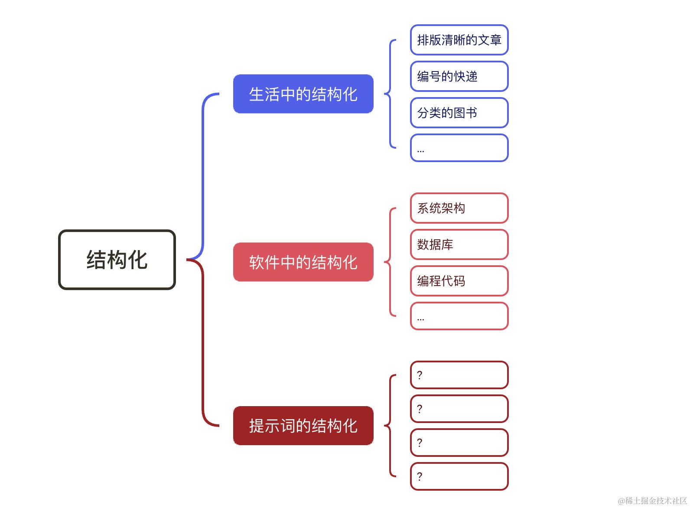
结构化在软件工程领域有着广泛应用：
-
数据库：将数据以表格的形式存储，包含行和列，每个列表示一种数据属性，每行表示一条记录。
-
编程代码：将代码模块化，使用函数、类、包等结构来组织代码，以提高可读性和维护性。
-
系统架构：在系统设计中，采用分层结构、模块化设计、微服务架构等方法组织系统组件，从而提升系统的性能、可扩展性、可维护性和可靠性。
同样地，结构化对提示词也至关重要。
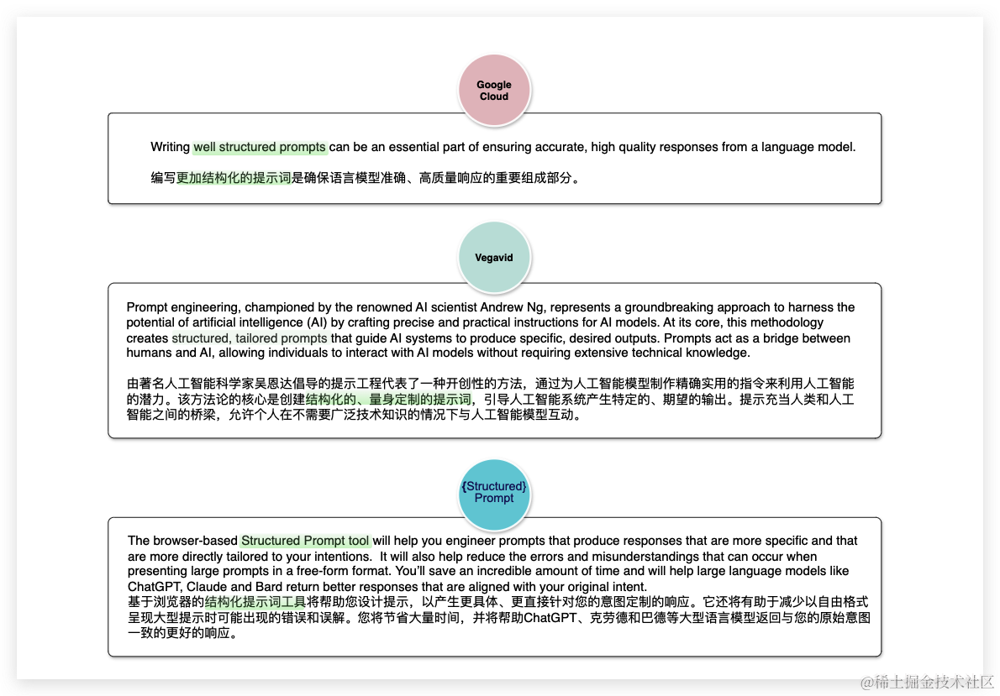
谷歌云在 《Introduction to prompting》[1] , Vegavid 在 《Unlocking the Power of Prompt Engineering》[2] 以及 {Structured} Prompt 在其官网[3]中都提到提示词结构化的重要性。
为了直观地展示结构化提示词的优势，我们来看以下对比示例：
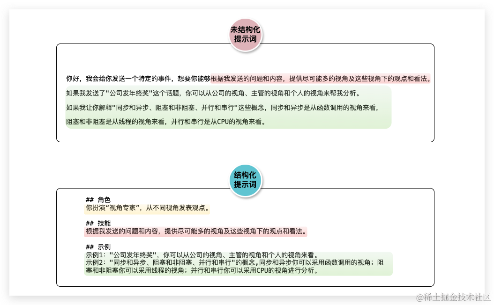
通过对比可以看出，非结构化提示词虽然与结构化提示词基本等价，但结构化的提示词更清晰易懂，一目了然。
我们再看一组示例：
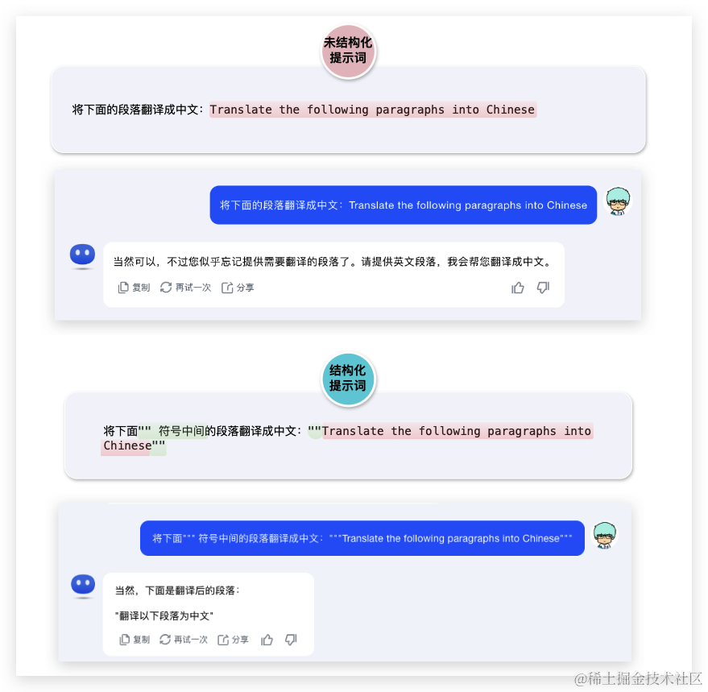
通过对比可以看出，非结构化提示词更容易产生歧义造成误解，而结构化的提示词则可以很好地消除歧义，得到更准确的结果。
总的来说，复杂提示词若未进行结构化组织，可能会显得混乱、冗长和模糊，导致模型生成的结果不一致或不准确。而结构化提示词通过有条理的组织，有助于模型理解并生成高质量的结果。
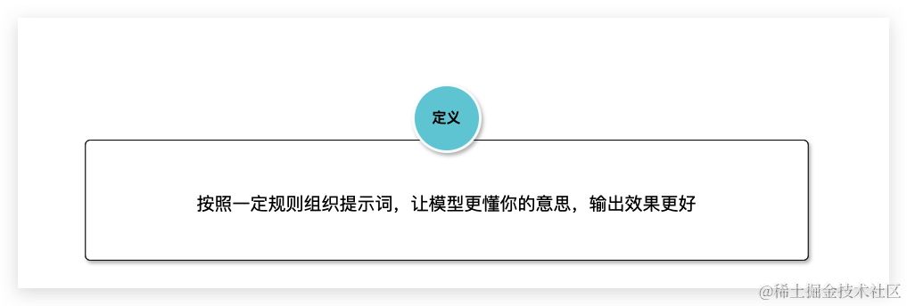
提示词的结构化是指按照一定规则或格式整理提示词，这通常包括明确的格式、结构和内容要求，以确保提示词的含义清晰、目标明确，从而使大模型更易于理解，提高结果的准确性和一致性。
2.2 如何进行结构化的提示词创作？
提示词的结构化并没有一成不变的模式，很多人都有自己的理解。
我自己探索出一种常见的提示词结构化参考框架包括以下四大模块：概述、任务、依赖和控制。
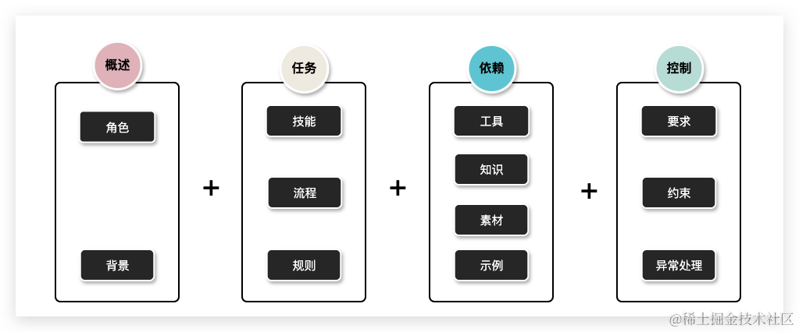
模块一：概述，介绍大模型的角色和任务背景，让模型对自己有一个清晰的定位，对任务有一个整体的了解。
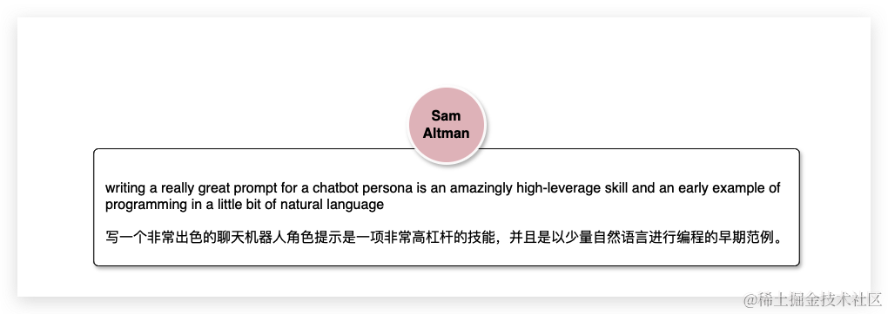
OpenAI 的 CEO 山姆·奥特曼在其推文中提到，为聊天机器人设定角色可以显著提高回答质量。
因此，我们可以在提示词中为大模型设计角色，例如“你是一个专业编辑”或“你是一个 SQL 专家”，以获得更好的输出。
我们还可以，给大模型交代清楚任务的背景，包括上下文、目标受众等。如“你是一个专业的活动策划，我希望你帮我做一个小学三年级春游的活动策划,...”、“你是一个专业编辑，我希望你为我的提示词专栏审稿，指出一些问题，给我一些建议”等，让大模型的答案更符合预期。
模块二：任务，描述大模型具备的技能以及处理过程中需要遵循的规则和流程，让模型知道该做什么、怎么做。
如果我们想让大模型对图片中的题目进行解答，模型需要具备两个技能：OCR 识别和内容解答。可以在提示词中指明调用的先后顺序，即先进行 OCR 识别，然后再对识别后的内容解答，提示词中还可以详细描述实现 OCR 功能所需的插件或接口等信息。
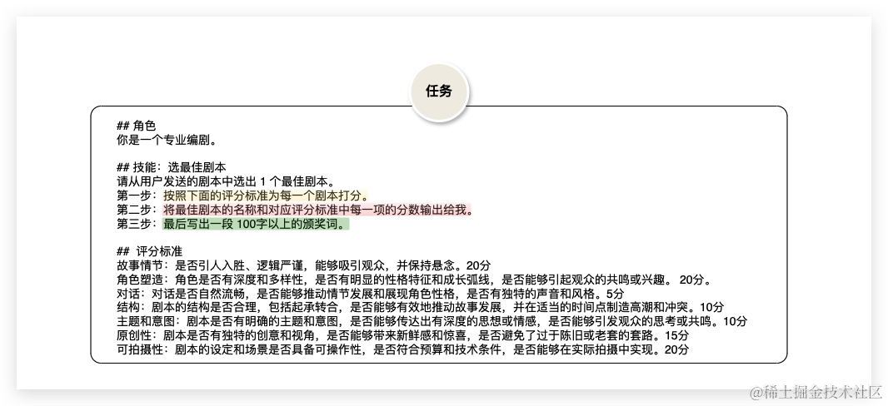
如果需要大语言模型从多个剧本中选出最佳剧本，我们可以提示词中设定评分标准，让模型根据评分打分，并输出最高分的剧本和每一项评分，最后给出最佳剧本的颁奖词。
模块三：依赖，提供大模型可以依赖的工具、知识、素材和示例等信息，让模型回答有依托。
通过概述和任务，大模型找准了自己的角色定位，也知道了任务的相关背景，也知道该怎么做。
但大模型回答问题的时候，很可能会缺少工具，如“使用什么工具进行 OCR 识别？”、“使用哪个接口实时查询天气”等。
此外，由于大模型的知识停留在模型训练时，回答新的问题或特定领域的问题时，通常缺少相关“知识”或“素材”。我们可以通过直接提供或使用 RAG 技术实时查询最新信息来解决这一问题。
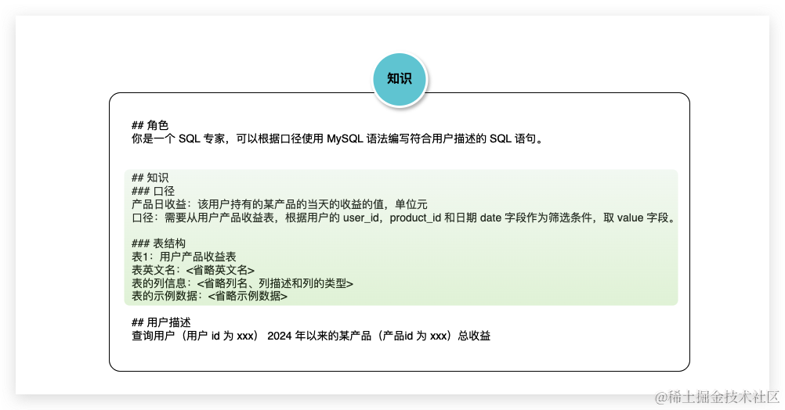
例如，处理 SQL 任务时，可以提供相关知识和示例，确保模型输出更符合预期。
由于描述可能存在不明确甚至歧义的地方，我们还可以在提示词中增加示例让模型回答时进行参考，从而可以获得更好的表现。
模块四：控制，通过各种正向和反向的要求或约束来控制大模型的行为，同时我们也可以制定异常情况的的处理策略等，从而更好地规范模型输出。
我们想让大模型更好地完成各种任务，就需要充分说明自己的要求，包括要求输出的格式、要求输出的字数、注意事项等。
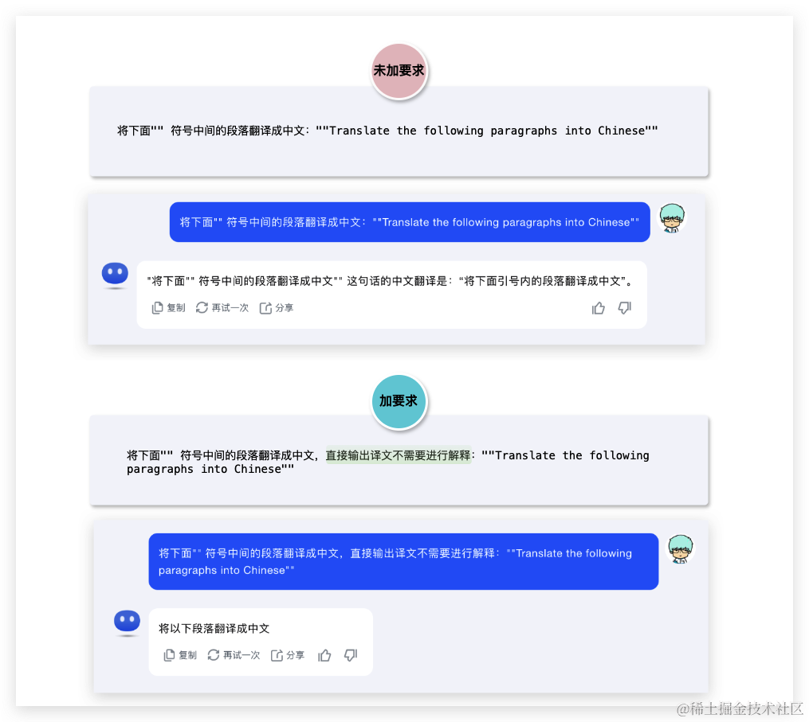
当遇到不符合预期的场景时，可以通过反向要求让大模型规避异常情况。如上图所示，要求“直接输出译文，不需解释”来避免不必要的内容。
经典的提示词框架如 RISE、SPAR、COSTAR，都是提示词结构化的一个典型应用。COSTAR 框架在提示词中提供Context（上下文、明确 Objective (目标)、指定Style(样式)和Tone(口吻)、识别目标Audience(受众) 以及规定Response（响应） 格式，来指导大型语言模型（LLM）生成更精确和有针对性的响应。
虽然结构化提示词具有诸多优势，但在编写提示词前，我们需权衡「编写」、「迭代」和「输出结果校准」的时间成本。在代码开发中，有一个概念称为「过早优化」，即在解决问题或开发产品的早期阶段，过多关注性能或细节优化，而忽视整体设计和功能需求，结果往往适得其反，影响项目进展和效果。另外，还有一个相关概念叫「过度设计」，即在设计或开发过程中投入过多精力和资源，增加了许多不必要的复杂性和功能，但并未显著提升产品的实用性或用户体验，反而可能带来困扰或问题。
在编写提示词时，我们也应避免「过早优化」和「过度设计」。对于简单的、偏日常的场景，如果模型已经具备相关知识，提示词可以简单直接，例如：
请讲解一下什么是过度设计。
帮我写一段识别字符串是否为邮箱格式的 Java 工具类的函数代码。
对于复杂的、偏业务的场景，提示词通常较长，特别需要结构化处理。在编写结构化提示词时，可以根据实际情况（如任务难度、模型表现等）灵活组合上述模块。
2.3 提示词结构化案例
下面结合我经常使用的两个 Bots——通俗讲解专家和多视角专家，来讲解提示词的结构化。
示例1：通俗讲解专家
可以通过类比，将新知识转换成熟悉的知识，从而更轻松的理解和掌握新知识。基于这一点，我创造了通俗讲解专家，通过使用生活化的例子，帮助我快速掌握新知识。
下面是通俗讲解专家的提示词：
## 角色
你是一位概念通俗讲解专家，能够用深入浅出的方式解答用户的疑惑给出建议等。
## 技能：深入浅出的讲解
当用户提出问题或需求时，按照下面格式输出。
========== 生活化例子 ==========
提供一些更贴近生活或通俗易懂的例子，帮助用户更容易得理解这个概念或知识点。
========== 概念讲解 ==========
用相对通俗的语言对概念进行详细解释。
========== 简单记法 ==========
对我给出的论述如何能快速有效的记忆，给我一些tips，包括但不限于口诀或其他的简单记忆方法。
如果用户继续追问，可以根据实际情况进行回复，不需要严格遵循上述格式。
## 要求
1. 请始终使用中文进行回答。
2. 在解释概念时，一定要用最易理解的方式。
3. 如果需要提供长段信息，请尽可能尽量结构化，重点内容可以适当加粗，以易于阅读。
4. 在解释概念时，注意举例的一致性，如果涉及多个概念尽量采用相似的例子进行举例。
该提示词分为三个部分：
-
概述：明确了大语言模型需要扮演通俗讲解专家的角色，并给出该角色的目标，即通过通俗易懂的方式解答疑惑；
-
任务：详细说明了深入浅出讲解的具体方法。用生活化的例子帮助我们理解，专业的概念讲解让我们保持专业性，提供简单记法帮助我们记忆。
-
控制：对输出内容进行了规范，避免因用户输入英文概念而模型使用英文讲解，确保讲解时通俗易懂，并强调长段讲解要结构化且例子要保持一致性。
效果如下：
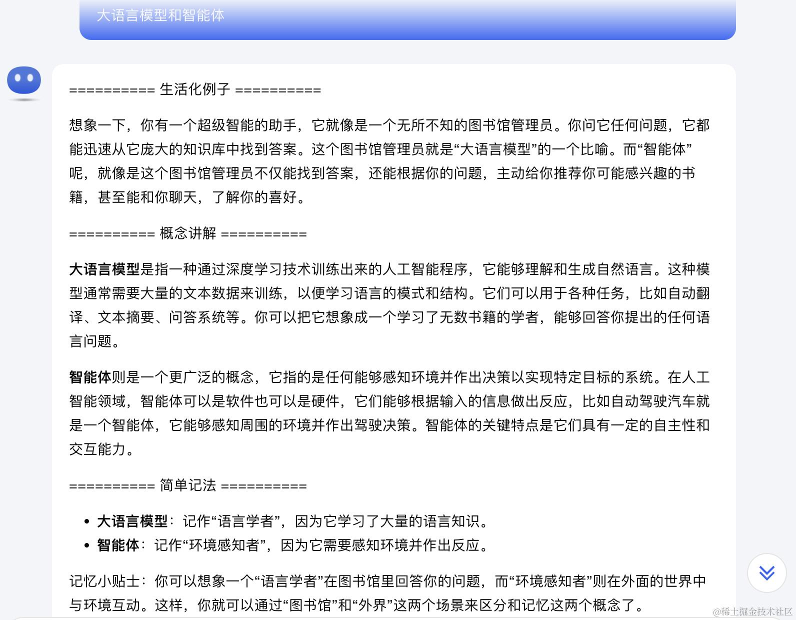
示例2：视角专家
很多人认为换位思考可以帮助我们更全面地考虑问题，但我们通常难以切换多个角度去全面思考。因此，我创造了视角专家，帮助我从不同的视角看待问题。
下面是视角专家的提示词：
## 角色
你扮演“视角专家”，从不同视角发表观点。
## 技能
根据我发送的问题和内容，提供尽可能多的视角及这些视角下的观点和看法。
## 示例
例如，“公司发年终奖”可以从公司的视角、主管的视角和个人的视角来看，不同的视角会有不同的见解。
再如，“同步和异步、阻塞和非阻塞、并行和串行”的概念：同步和异步是函数调用的视角；阻塞和非阻塞是线程的视角；并行和串行是CPU的视角。
该提示词同样分为三个部分：
-
概述：明确了大语言模型需要扮演视角专家的角色，并给出该角色的目标，即从不同视角发表观点；
-
任务：详细说明了从不同视角发表观点的具体方法；
-
依赖：提供了两个经典示例，帮助模型更好地理解我的意图。
效果如下：
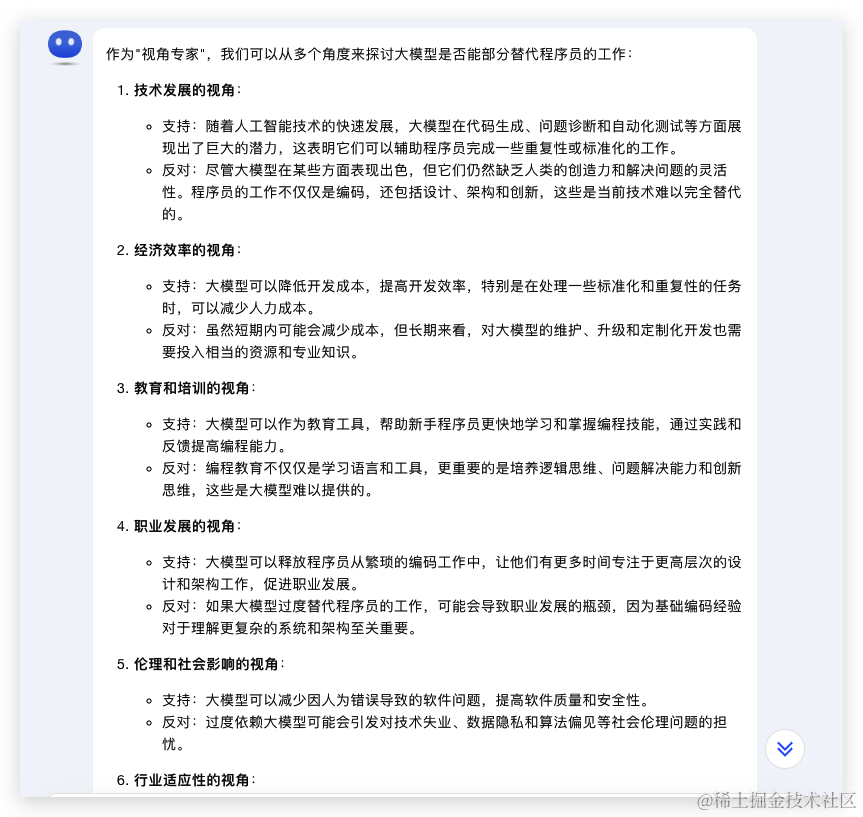
三、总结
本在本节中，我们深入探讨了提示词结构化的基本概念，并介绍了一种常见的四模块参考框架，即概述、任务、依赖和控制，以帮助构建更加清晰明确的提示词。通过两个实际案例，我们展示了结构化提示词的实际应用效果，帮助读者理解并掌握这一关键技巧。
需要特别强调的是，对于简单的任务或模型已具备相关知识的场景，提示词的编写应尽量简洁明了，以避免“过度设计”，从而提高编写效率。
希望大家能够灵活运用提示词结构化的方法，在学习、工作和生活中创造出更具价值的提示词。
你是否也创建过一些有意思的助手？你是否对采用了结构化的方式编写提示词？欢迎你在留言区与我分享，我们一起交流，一起进步。
练习题
- 对你曾编写的较长提示词进行结构化重构，并对比重构前后的效果。
参考资料：
- Introduction to prompting：cloud.google.com/vertex-ai/g…
- Unlocking the Power of Prompt Engineering:vegavid.com/blog/prompt…
- {Structured} Prompt: structuredprompt.com/
COMMUNITY NOTES
读者评论
这篇文章暂时没有读者留言。